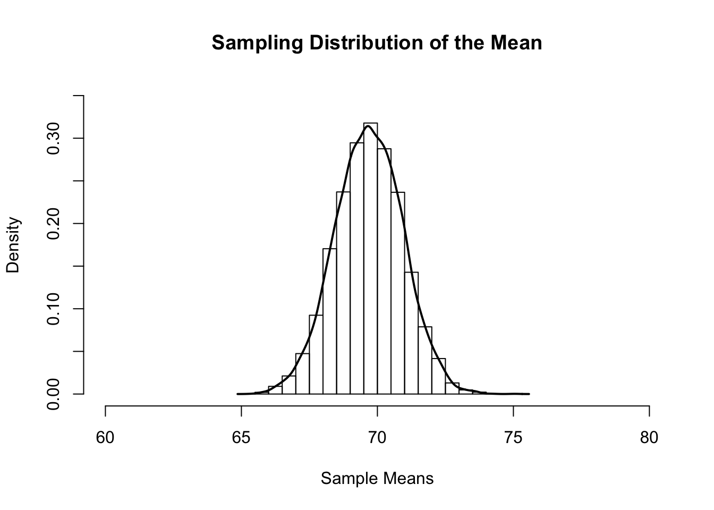

Chapter 5 Estimation
Most of the time, we don’t know the values of the population parameters we are interested in and it would be unrealistic to collect data from everyone in the population. Estimation allows us to take a sample from that population and use that sample to make an educated guess about the population. This process is also referred to as inferential statistics.
This process usually involves taking a sample statistic and using that to estimate the population parameter. The primary issue here is whether the sample accurately reflects the population or not. Every sample could be different, right? So how do we know which sample to trust?
The short answer: we don’t. Statisticians wish that such certainty was possible. But then again, the whole concept of statistical analysis is to figure out how to handle our uncertainty. The concept of sampling distributions helps us do this.
5.1 Sampling Distribution
A sampling distribution of a statistic is a distribution of all possible values of that statistic from all possible samples of a population. This is not to be confused with the sample distribution, which is the distribution of scores in a sample.
Say we have a population of \(100\). And say we took a sample of \(30\). That means that there are \(70\) individuals who were not sampled. Couldn’t we have just as easily chosen a sample of a different \(30\) individuals? In fact, there are \(29,372,339,821,610,944,823,963,760\) different possible samples of we could have taken.
Now, each of those samples could have given us a different mean. If we had actually taken all possible samples, and taken all possible means, then we would have a large set of numbers. And what can we do with sets of numbers? Create distributions! More specifically, we can create a sampling distribution of the mean. Below is a distribution of means from \(10,000\) different samples of size \(30\) from the population of \(100\). Hey, it looks like a normal distribution! That’s nifty.

5.2 Estimating the Mean
This distribution has a pretty cool feature. The mean of sample means is 69.69, and the actual population mean is 69.68! Using this distribution, statisticians can estimate the population mean pretty accurately. But it’s also important to notice how some of the sample means were as low as \(65\). It may not have been many, but it shows that there is always a chance that a sample could lead to an incorrect estimate.
Because of these properties, the sample mean is known as an unbiased estimator. That is, it approximates the population mean precisely.
5.3 Estimating the Variance
Unlike the sample mean, the sample variance is a biased estimator. That is, it is consistently lower than the actual population variance. Sounds like we need a new formula! Remember the formula for calculating sample variance:
\(\Large s^2 = \frac{\sum (X_i - \bar X)^2}{N}\)
To calculate an estimate of the population variance, we alter the formula a bit:
\(\Large \hat s^2 = \frac{\sum (X_i - \bar X)^2}{N-1}\)
Because the sample variance underestimates the population variance, we subtract 1 from the denominator. This beefs up the estimate a little bit to compensate for the bias.
Notice the tiny “hat” on the \(\hat s^2\). That little hat tells us that this is an estimate of the population variance This is distinguished from the sample variance and the actual population variance.
5.4 Estimating the Standard Deviation
One of the ways to calculate the standard deviation in a sample is to take the square root of the variance. Fortunately, the same applies when estimating the population standard deviation (less formulas to remember!). You can simply use the following:
\(\Large \hat s = \sqrt{\hat s^2}\)
Don’t get \(s\) and \(\hat s\) mixed up! They look very similar but are quite different.
5.5 Estimating Standard Error
In addition to calculating the mean of the sampling distribution of the mean, we can also calculate the standard deviation of the sampling distribution. When this is done for the sampling distribution of the mean, this is called the standard error of the mean. A standard error of \(0\) means that the sample mean estimates the population mean perfectly, while higher standard errors indicate a lack of reliability in the estimation of the population mean.
The standard error of the mean is calculated with the following forumla:
\(\Large \sigma_{\bar X} = \frac{\sigma}{\sqrt{N}}\)
But remember! We rarely know the population variance. So, we usually have to use this formula:
\(\Large \hat s_{\bar X} = \frac{\hat s}{\sqrt{N}}\)
It’s important not to get \(\hat s_{\bar X}\) mixed up with \(s\), \(\hat s\), \(s^2\), and \(\hat s^2\)! They can get pretty confusing.
5.6 Degrees of Freedom
Technically speaking, degrees of freedom tell us how many things in a set are independent of eachother. Now if you’re like me, that definition kinda makes no sense. So I’ll try to explain.
Suppose you have a set of nine numbers. However, you only know the mean and eight of those numbers. Using basic algebra, you can solve for the ninth number. In other words, eight of those nine numbers were free to take on any value. But once they did, that ninth number could only take on one value. We could say that there were eight degrees of freedom there (because eight numbers were free to vary).
5.7 Effect Sizes
In addition to descriptive statistics, data analysis often involves the estimation of effect sizes. Effect sizes are somewhat like descriptive statistics, except they usually describe multiple variables at a time. They describe the magnitude of the impact of one variable (or multiple variables) on another variable. The choice of effect size depends on the type of data. Below are the effect sizes that will be covered for each statistical test.
| Test | Population Effect Size | Sample Effect Size |
|---|---|---|
| z and t | \(\Large \delta\) | \(\Large d\) |
| ANOVAs | \(\Large \eta^2\) | \(\Large \eta^2\) |
| Correlation and Regression | \(\Large \rho, P^2, \beta\) | \(\Large r, R^2, b\) |
| Chi-Square | \(\Large \phi\) | \(\Large V\) |
In general, \(d\) measures group differences. The effect sizes \(r, R^2, b,\ and\ V\) measure associations. Depending on the context, \(\eta^2\) may measure either group differences or associations.
Terminology note: All effect sizes are either statistics (in samples) or parameters (in populations). This is the reason for the differences in notation in the table above. However, perhaps because nothing can be that simple, the greek notation \(\eta^2\) is used even for sample effect sizes.
Effect sizes have had a troubled past with a number of different interpretations4. Given Funder and Ozer’s (2019) reccomendations, the traditional benchmarks for small, medium, and large effect sizes will not be given here. Effect sizes should instead be interpreted within the context of the problem. As a general guideline, larger values indicate stronger effects.
5.8 Keeping Everything Straight
Here’s a table to help you remember the differences between population parameters, sample statistics, and sample estimates of population parameters:
| Statistic | Population | Sample | Sample Estimate of the Popoulation |
|---|---|---|---|
| Mean | \(\Large \mu = \frac{\sum X_i}{N}\) | \(\Large \bar X = \frac{\sum X_i}{N}\) | \(\Large \bar X = \frac{\sum X_i}{N}\) |
| Variance | \(\Large \sigma^2 = \frac{\sum (X_i - \mu)^2}{N}\) | \(\Large s^2 = \frac{\sum (X_i - \bar X)^2}{N}\) | \(\Large \hat s^2 = \frac{\sum (X_i - \bar X)^2}{N-1}\) |
| Standard Deviation | \(\Large \sigma = \sqrt{\frac{\sum (X_i - \mu)^2}{N}}\) | \(\Large s = \sqrt{\frac{\sum (X_i - \bar X)^2}{N}}\) | \(\Large \hat s = \sqrt{\frac{\sum (X_i - \bar X)^2}{N-1}}\) |
Kelley & Preacher, 2012↩︎